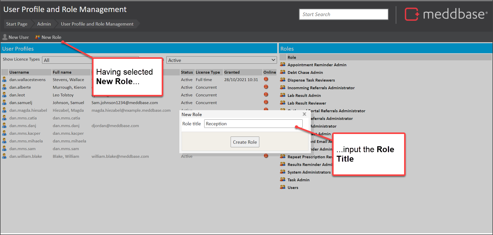
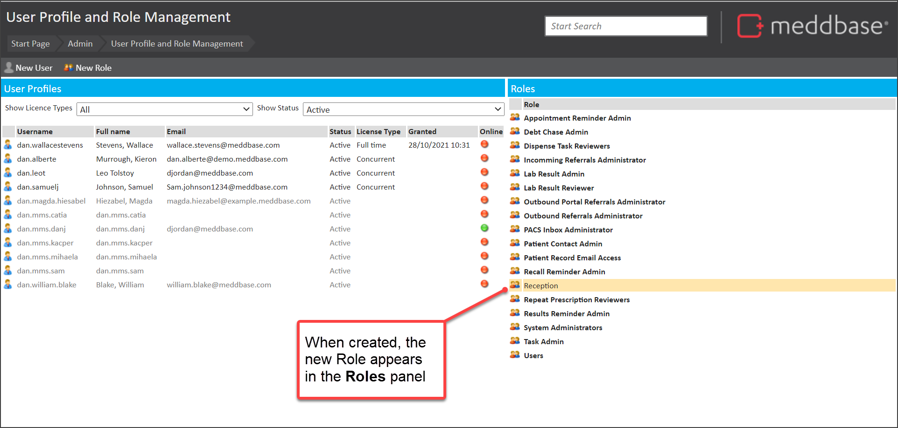
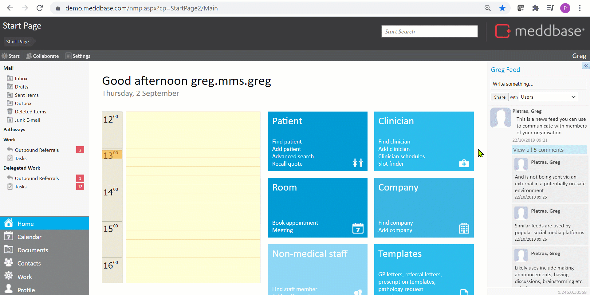

There is a range of built-in Role groups within Meddbase, that may represent the roles you need.
However, you may want to create custom Role groups to represent your different groups of users. So that you can then apply appropriate security policies for different things that Role can do such as viewing patient medical records, downloading documents or modifying accounts through Security Certificates.
This article:
To create a new Role, you can do as follows:

The new Role is created and is displayed in the Roles panel of the page.

The short video below presents an example of how to create a new role.

When the new Role group has been created you can: